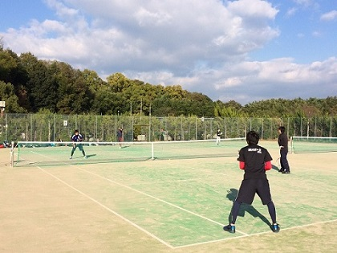

練習について
さてさて、一体どのような練習をしているのでしょうか？
びっけでは、ストローク、ボレー、スマッシュといった基本の球出し練習に加えて、 主にダブルスを想定した試合形式の練習も行っています。通常練習では練習用コートと試合用コートに分け、練習だけでなく、普段から、実際に試合を織り交ぜながらテニスを楽しんでいます。


4月、5月の新歓期には新入生用コートを用意し、基礎の基礎から先輩たちが丁寧に教えます。経験者はもちろん大学生からテニスを始たいという方も自分に合った スタイルで練習に取り組むことができます！！